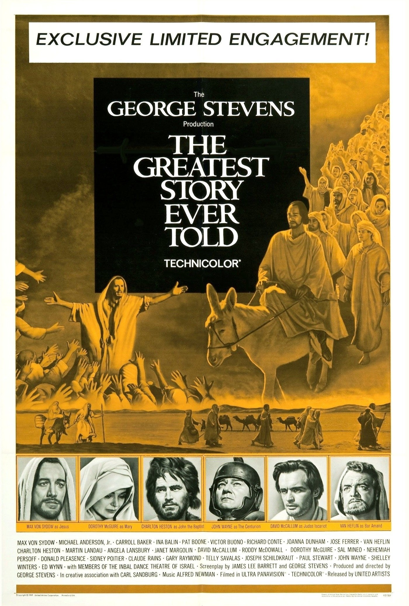

The Greatest Story Ever Told
38th Academy Awards
(Oscars 1966)
5 Nominations, 0 Awards
| Nominations | ||
|---|---|---|
| Category | Nominees | Result |
| Cinematography (Color) | Loyal Griggs and William C. Mellor | Nominated |
| Art Direction (Color) | David Hall, Fred MacLean, Norman Rockett, Ray Moyer, Richard Day, and William Creber | Nominated |
| Costume Design (Color) | Marjorie Best and Vittorio Nino Novarese | Nominated |
| Special Visual Effects | J. McMillan Johnson | Nominated |
| Music (Music Score--substantially original) | Alfred Newman | Nominated |